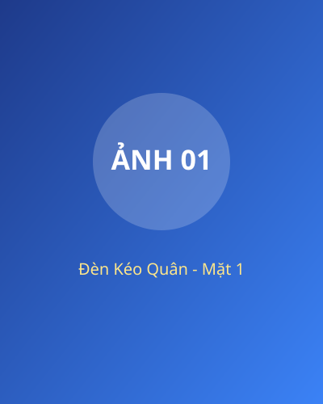
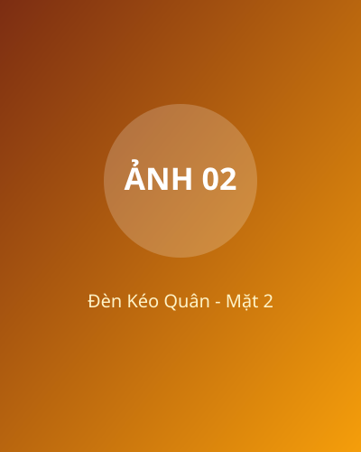
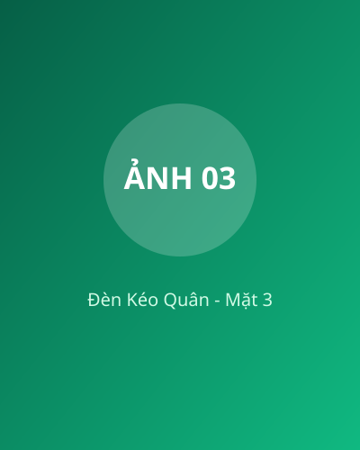
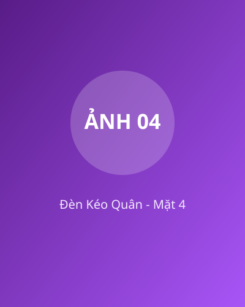
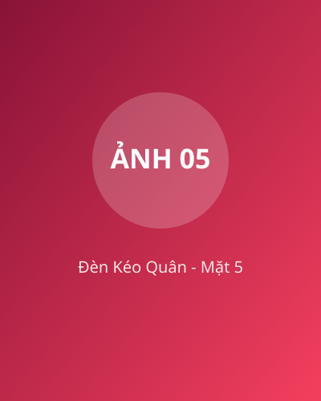
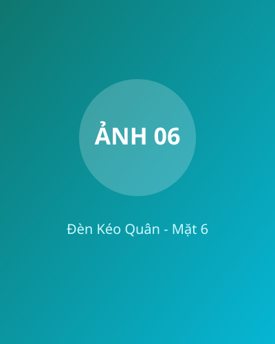

ĐÈN KÉO QUÂN – BÀI TẬP 24
Trò chơi dân gian đèn kéo quân được mô phỏng bằng hiệu ứng không gian 3 chiều (CSS 3D Transform) với 6 mặt hình ảnh bố trí đều quanh trục trụ. Khi đưa chuột vào một hình ảnh bất kỳ, đèn sẽ dừng quay để bạn quan sát; khi rê chuột ra ngoài, đèn tiếp tục quay.
Trạng thái: Đèn đang quay

Mặt 1 – Ảnh cá nhân 1

Mặt 2 – Ảnh cá nhân 2

Mặt 3 – Ảnh cá nhân 3

Mặt 4 – Ảnh cá nhân 4

Mặt 5 – Ảnh cá nhân 5

Mặt 6 – Ảnh cá nhân 6